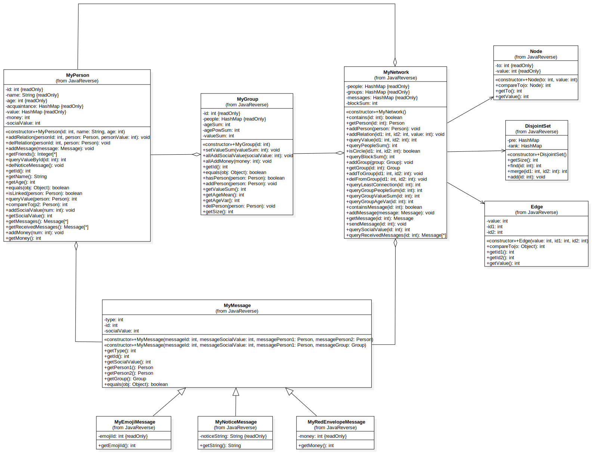

前言
第三单元的主题是“规格化设计”，要求我们学会理解JML规格语言，并能基于规格进行代码实现。总的来说，本单元的三次作业都比较简单，只需要根据课程组提供给的规格进行编程即可。但是，规格仅仅是一种契约，针对一种特定的规格可能会有很多实现方法，因此我们在编程时还需要特别注意代码运行的效率（否则很容易TLE）。
我相信课程组开设这一单元的主要目的并不是要让我们学会使用JML这一语言（毕竟JML是真的冷门），而是想让我们在“面向规格编程”的过程中感受到“契约式编程”的魅力——高可靠性、高可复用性、便于测试…
第一次作业分析
题目链接
第一次作业比较简单，只需要根据官方提供的Group、NetWork和Person这三个接口进行代码设计，实现简单社交关系的模拟和查询。
UML类图
代码架构分析
这次作业我把重心放在代码效率的优化上，重点关注以下几个问题——
- 容器的选择
- 计算类函数的优化
- 并查集的优化
容器的选择
本次作业绝大多数指令都是通过id来寻找对应的Group或者Person。以Person为例，如果把所有的Person都放在一个List容器里，那么我们每次查找都需要遍历一遍容器，算法复杂度为$O(n)$，很容易出现TLE。
最终，我选择了HashMap作为存储Group和Person的容器，将id作为键值，这样可以保证每次查询都能以$O(1)$的复杂度完成，大大降低超时的概率。
计算类函数的优化
本次作业有三个计算类函数——
/*@ ensures \result == (\sum int i; 0 <= i && i < people.length;
@ (\sum int j; 0 <= j && j < people.length &&
@ people[i].isLinked(people[j]); people[i].queryValue(people[j])));
@*/
public /*@ pure @*/ int getValueSum();
/*@ ensures \result == (people.length == 0? 0:
@ ((\sum int i; 0 <= i && i < people.length; people[i].getAge()) / people.length));
@*/
public /*@ pure @*/ int getAgeMean();
/*@ ensures \result == (people.length == 0? 0 : ((\sum int i; 0 <= i && i < people.length;
@ (people[i].getAge() - getAgeMean()) * (people[i].getAge() - getAgeMean())) /
@ people.length));
@*/
public /*@ pure @*/ int getAgeVar();为了进一步提高代码效率，我对这几个函数中需要计算的数据进行了维护。以getAgeMean()为例，我设置了一个ageSum用来表示group中所有人年龄总和，每次向group中加人时维护ageSum，在getAgeMean直接返回ageSum/people.size()即可。
在函数getAgeVar()中还隐藏着一个坑——因为getAgeMean()的返回值已经被向下取整了，因此 $\frac{\sum_{i = 1}^n(age_i - ageMean)^2}{n}$ 不恒等于 $\frac{(\sum_{i=1}^nage_i^2) - n\times ageMean^2}{n}$。正确的做法是将其拆解为 $\frac{(\sum_{i=1}^nage_i^2) - 2\times ageMean \times(\sum_{i=1}^nage_i)+ n\times ageMean^2}{n}$，同时，我们还需要设置一个agePowSum变量表示年龄平方和，也是每次在加人的时候维护。这样在调用getAgeVar()函数时，我们只需要将ageSum和agePowSum代入即可，同样可以保证计算复杂度为$O(1)$。
并查集的优化
本次作业中的isLinked()函数要求查询两个Person之间的连通性，对于这个问题，我们当然可以用dfs递归查询，复杂度并不算高，但也不算优秀。所以有没有有比dfs复杂度更低的方法呢？ 答案当然是有，我们可以采用并查集算法进行优化。（对于并查集算法的原理，讨论区的教学帖已经讲得很清楚了，此处不再赘述。）
为了更好的符合“面向对象”的设计思想，我们可以将并查集封装成类，在类中用HashMap来存储结点的父子关系，用find()、merge()、add()等方法封装并查集的相关操作。
public class DisjointSet {
private HashMap<Integer, Integer> pre;
private HashMap<Integer, Integer> rank; // 在“按秩合并”里用到
public DisjointSet() {
this.pre = new HashMap<>(2048);
this.rank = new HashMap<>(2048);
}
public void add(int id) {
if (!pre.containsKey(id)) {
pre.put(id, id);
rank.put(id, 0);
}
};
public int find(int id) {...};
public int merge(int id1, int id2) {...};
}此外，为了进一步减小复杂度，我对并查集做了两种优化——
-
路径压缩:
当我们查找一个元素所在集合的代表元时，可以将查找路径上所有元素的直接上级设为代表元。

我们可以直接在
find函数里实现这个优化public int find(int id) { int rep = id; //representation element while (rep != pre.get(rep)) { rep = pre.get(rep); } int now = id; while (now != rep) { int fa = pre.get(now); pre.put(now, rep); now = fa; } return rep; }注意：不能使用递归的方法来寻找代表元，否则很可能会爆栈。
-
按秩合并:
由于我们在找出一个元素所在集合的代表元时需要递归地找出它所在的树的根结点，所以为了减短查找路径，在合并两棵树时要尽量使合并后的树的高度降低，所以要将高度低的树指向高度更高的那棵。我们将树的高度称为秩，合并时将 “小秩”集合的代表元的直接上级设为 “大秩”集合的代表元。

我们需要在
merge函数里实现这个优化public int merge(int id1, int id2) { int fa1 = find(id1); int fa2 = find(id2); if (fa1 == fa2) { return -1; } int rank1 = rank.get(fa1); int rank2 = rank.get(fa2); if (rank1 < rank2) { pre.put(fa1, fa2); } else { if (rank1 == rank2) { rank.put(fa1, rank1 + 1); } pre.put(fa2, fa1); } return 0; }
第二次作业分析
题目链接
第二次作业新增了message类，要求我们根据规格进一步实现消息增加、消息发送等功能。
UML类图
代码架构分析
这次作业又增加了几个查询指令，可以直接用第一次作业的方法来减小复杂度（选择map、设置变量维护等等）。除此之外，我们还需要特别关注query_least_connection这个指令。
这个指令的JML描述实在是太冗长了，不过核心思想很简单，就是要求我们得到person_id所在联通分支的最小生成树，并算出最小生成树里所有边的权重和。一般来说，最小生成树的计算方法有两种——Kurskal算法和Prim算法，因为我在第一次作业已经封装好了并查集类DisjointSet，自然使用Kurskal算法会更方便一点。
选择好了算法，我们还需要关注两个问题——
- 如何获得
person_id所在的连通分支？（只需获得连通分支里所有点和边即可） - 如何对算法进行优化？
联通分支的获取
在第一次作业中，我们已经实现了并查集，并且将Network里所有的点都加入到这个并查集里（我们姑且将这个并查集称为 “全局并查集”，把Kruskal算法实现里的并查集称为 “临时并查集”）。这样，我们就可以遍历所有的边，只要边的某个端点和person_id在一个连通分支里，那么这个边和它的两个端点都属于person_id所在的连通分支。具体遍历过程如下——
@Override
public int queryLeastConnection(int id) throws PersonIdNotFoundException {
//tempSet为临时并查集，存储联通分支里所有的点
DisjointSet tempSet = new DisjointSet();
//tempedges为临时点集，存储连通分支里所有的边
ArrayList<Edge> tempEdges = new ArrayList<>();
//遍历所有的点
for (Edge edge : edges) {
int id1 = edge.getId1();
int id2 = edge.getId2();
if (disjointSet.find(id1) == disjointSet.find(id)) {
tempSet.add(id1);
tempSet.add(id2);
tempEdges.add(edge);
}
}
//...
}为了方便，我将边单独封装成类（Edge），类中记录Edge的两端点id和边的权重，并在Network里设置edges来储存所有的Edge。
public class Edge implements Comparable {
private int value;
private int id1;
private int id2;Kruskal算法优化
标准Kruskal算法需要先对连通分支里所有的边进行排序，然后遍历所有的边，每次选择一个权重最小的边加入生成树。对于这个过程，我们可以采用优先队列进行优化。只需要将前面维护的tempSet传入PriorityQueue类的构造方法里，就可以得到一个由边组成的优先队列，这样每次就可以从队首获取一个最小边。
@Override
public int queryLeastConnection(int id) throws PersonIdNotFoundException {
if (!people.containsKey(id)) {
throw new MyPersonIdNotFoundException(id);
}
DisjointSet tempSet = new DisjointSet();
ArrayList<Edge> tempEdges = new ArrayList<>();
for (Edge edge : edges) {
int id1 = edge.getId1();
int id2 = edge.getId2();
if (disjointSet.find(id1) == disjointSet.find(id)) {
tempSet.add(id1);
tempSet.add(id2);
tempEdges.add(edge);
}
}
int ans = 0;
int times = tempSet.getSize();
//构造优先队列
PriorityQueue<Edge> priorityQueue = new PriorityQueue<>(tempEdges);
//遍历优先队列，每次从队首获取最小边
while (!priorityQueue.isEmpty() && times > 1) {
Edge edge = priorityQueue.peek();
int id1 = edge.getId1();
int id2 = edge.getId2();
if (tempSet.find(id1) != tempSet.find(id2)) {
tempSet.merge(id1, id2);
ans += edge.getValue();
--times;
}
priorityQueue.poll();
}
return ans;
}第三次作业分析
题目链接
第三次作业将第二次作业中的Message进行了泛化，增加了继承自Message的许多新消息类型——red_envelope_message、notice_message和emoji_message。这些消息的增加和传递方式有所变化，只需要对照JML对代码稍作修改即可
UML类图

代码架构分析
迭代器删除
本次作业中的delete_code_emoji指令涉及到了对容器内容进行删除，如果直接在遍历时删除，很可能会出现意想不到RE错误。但是，使用迭代器对容器内容进行遍历和删除操作则不会出现问题。
在前几次作业里，我只用迭代器删除过List和Set里的元素。然而在这次作业里，为了减少时间复杂度我使用了Map作为容器，Map中键值对的删除操作与List、Set稍有不同——
@Override
public int deleteColdEmoji(int limit) {
Iterator it;
it = emojis.entrySet().iterator();
while (it.hasNext()) {
Map.Entry entry = (Map.Entry) it.next();
if ((Integer)(entry.getValue()) < limit) {
it.remove();
}
}
//...
}最短路径的求解
前两次作业中都有和图论算法相关的问题，第三次作业作为压轴，自然也少不了。这次作业中sendIndirectMessage就是要求我们找一个最短路径，并将消息沿着该路径发送给指定的人，本质上就是一个 单源最短路径问题。
谈到最短路径，我们首先想到的自然是以"松弛"为特色的Dijkstra算法。不过标准Dijstra算法的复杂度其实是$O(n^2)$，当图的规模比较大、查询指令比较多的时候很容易出现TLE。因此，我们还需要使用堆进行优化。
我单独设置了一个函数来封装Dijstra算法的实现过程，该函数返回一个HashMap，key为person的id，value是出发点到person之间最短路径的长度。
private HashMap<Integer, Integer> dijkstra(int id) {
// 记录出发点到各个节点之间的距离
HashMap<Integer, Integer> dis = new HashMap<>();
// 记录某个节点是否被访问过
HashMap<Integer, Boolean> vis = new HashMap<>();
// 创建优先队列
PriorityQueue<Node> heap = new PriorityQueue<>();
// dis和vis的初始化
for (Integer i : people.keySet()) {
dis.put(i, Integer.MAX_VALUE);
vis.put(i, false);
}
dis.put(id, 0);
heap.add(new Node(id, 0));
// 算法核心流程
while (!heap.isEmpty()) {
Node cur = heap.poll();
int curId = cur.getTo();
if (vis.get(curId)) {
continue;
}
vis.put(curId, true);
MyPerson person = (MyPerson) people.get(curId);
for (Integer friendId : person.getFriends()) {
int w = person.queryValueById(friendId);
if (!vis.get(friendId) && dis.get(curId) + w < dis.get(friendId)) {
dis.put(friendId, dis.get(curId) + w);
heap.add(new Node(friendId, dis.get(friendId)));
}
}
}
return dis;
}上述代码中，优先队列中存储的是我封装好的Node类，Node类中存储dis容器中的键值对，同时还需要重写compareTo方法，以便于优先队列的创建和维护。
public class Node implements Comparable<Node> {
private final int to;
private final int value;
public Node(int to, int value) {
this.to = to;
this.value = value;
}
@Override
public int compareTo(Node o) {
return this.value - o.value;
}
public int getTo() {
return to;
}
public int getValue() {
return value;
}
}此处还有一个优化思路，我们的dijkstra()函数返回的是一个存储“开始节点到所有节点的最短距离”的HashMap，然而我们在查询的时候仅访问了这个HashMap中的一个键值对，很显然是比较浪费的。因此，我们可以在全局维护一个存储若干HashMap的容器（当然这个容器也可以是HashMap），每次调用dijkstra()都将得到的结果存放这个容器里，以便重复使用。需要注意的是，每次在图里增添节点（即person）后，该容器里所有的HashMap都失效了，可以设置一个dirty变量来记录。
个人bug分析
在三次作业的强测和互测中均没有出现bug。
关于测试
本单元还是延续自动化测试的传统。
因为对于每个指令都有唯一正确的输出，所以我们可以通过 “对拍+文本比较” 的方式对正确性进行验证。但是，如何编写数据生成器来生成高强度的数据呢？
数据生成器这个东西，写起来说容易也容易，说难也难——容易在我们可以直接对照着数据指令的格式，使用随机数的方法无脑造数据，但是难在无法保证数据的强度。尤其是这一单元涉及到了图的建立，如果完全随机生成数据的话，图的复杂度可能会非常低（例如图中大多数都是孤立结点）。
因此，我们不能完全依靠随机数生成指令。
采用数据结构存储状态
为了提高数据的强度，我在数据生成器里设置一些数据结构，存储 “所有group、person、message的id”，“group和person之间的关联关系”、“当前生成的图的状态（如连通性）” 等等。每当需要生成一个指令，我们都需要参考数据结构，根据数据状态进行生成。此外，在生成指令时，我们还需要对相关数据结构进行维护。
我的数据生成器里设置了如下几个数据结构——
# 各个id的集合
person_id_set = set()
group_id_set = set()
msg_id_set = set()
emoji_id_set = set()
money_msg_id_set = set()
emoji_msg_id_set = set()
notice_msg_id_set = set()
link_map = {} # 记录person之间的联通关系
group_map = {} # 记录每个group下所有person的id
msg_info_map = {} # 记录每个message的相关信息
emoji_heat_map = {} # 记录所有emoji
max_heat = 0 # 记录emoji的最大热度面向JML生成数据
JML规格中已经描述了每个方法可能出现的各种正常、异常情况，我们在生成每个方法对应的指令时，一定要为每种情况设置一定的出现概率，而这也需要数据结构来保证。
举个非常简单的例子，add_person方法要求我们向Network里加入一个Person，JML规格如下所示——
/*@ public normal_behavior
@ requires !(\exists int i; 0 <= i && i < people.length; people[i].equals(person));
@ assignable people;
@ ensures people.length == \old(people.length) + 1;
@ ensures (\forall int i; 0 <= i && i < \old(people.length);
@ (\exists int j; 0 <= j && j < people.length; people[j] == (\old(people[i]))));
@ ensures (\exists int i; 0 <= i && i < people.length; people[i] == person);
@ also
@ public exceptional_behavior
@ signals (EqualPersonIdException e) (\exists int i; 0 <= i && i < people.length;
@ people[i].equals(person));
@*/
public void addPerson(/*@ non_null @*/Person person) throws EqualPersonIdException;通过JML规格可以看出，这个方法在执行时可能出现两种情况—— “Person以前不在Network里” 和 “Person本来就在Network里”。我们生成的数据需要涵盖这两种情况，而且要保证每种情况都有较大的出现概率（可以给每一情况分配0.5的概率）
def get_unexist_id(id_set) : # 封装成函数，可以在生成其他指令时使用
id = random.randint(min, max)
while (id in id_set) :
id = random.randint(min, max)
return str(id)
def get_exist_id(id_set) : # 封装成函数，可以在在生成其他指令时使用
id = random.choice(list(id_set))
return str(id)
def add_person() :
prob = random.uniform(0, 1)
# 50%的概率person在Network里
if (prob < 0.5 and person_id_set) :
id = get_exist_id(person_id_set)
# 维护数据结构
person_id_set.add(id)
link_map[id] = []
disjoint_set.add(id)
# 50%的概率person不在Network里
else :
id = get_unexist_id(person_id_set, min, max)
return "ap " + id + " " + get_name() + " " + get_age()
当然，有些方法涉及到的情况比较复杂。例如add_relation、add_to_group等许多方法需要获得 “两个person的id” 或者是 “一个person和一个group的id”，并根据两个id之间的关系进入不同的情况分支。
为了更好的实现代码复用，我在数据生成器里设置了get_double_person_id和get_person_group_id两个函数来分别生成 “两个person的id” 或者是 “一个person和一个group的id”。
get_double_person_id中生成的两个personId的关系有以下四种
- person1和person2都不存在
- person1和person2只有一个存在
- person1和person2都存在，且两个person不邻接
- person1和person2都存在，且两个person邻接
get_person_group_id中生成的personId和groupId的关系有以下五种
- person不存在，group不存在
- person不存在，group存在
- person存在，group不存在
- person存在，group存在，person在group里面
- person存在，group存在，person不在在group里面
我们可以通过查询数据结构来生成不同关系的id，但同样也需要设置概率来保证每一种关系的两个id都有可能被生成。
数据生成器整体架构
数据生成器的整体架构如下所示——
instr_list = ['ap', 'ar', 'qv', 'qps', 'qci', 'qbs', 'ag', 'atg', 'dfg',
'qgps', 'qgvs', 'qgav', 'am', 'sm', 'qsv', 'qrm', 'qlc',
'arem', 'anm', 'cn', 'aem', 'sei', 'qp', 'qm', 'sim', 'dce']
def add_message()
def add_relationship()
... ...
def get_instr(instr) :
if (instr == 'ap') :
return add_person()
elif (instr == 'ar') :
return add_relation()
elif (instr == 'qv') :
return query_value()
elif (instr == 'qps') :
return query_people_sum()
elif (instr == 'qci') :
return query_circle()
elif (instr == 'qbs') :
return query_block_sum()
elif (instr == 'ag') :
return add_group()
elif (instr == 'atg') :
return add_to_group()
elif (instr == 'dfg') :
return del_from_group()
elif (instr == 'qgps') :
return query_group_people_sum()
elif (instr == 'qgvs') :
return query_group_value_sum()
elif (instr == 'qgav') :
return query_group_age_var()
elif (instr == 'am') :
return add_message()
elif (instr == 'sm') :
return send_message()
elif (instr == 'qsv') :
return query_social_value()
elif (instr == 'qrm') :
return query_received_messages()
elif (instr == 'qlc') :
return query_least_connection()
elif (instr == 'arem') :
return add_red_envelope_messages()
elif (instr == 'anm') :
return add_notice_messages()
elif (instr == 'cn') :
return clean_notices()
elif (instr == 'aem') :
return add_emoji_messages()
elif (instr == 'sei') :
return store_emoji_id()
elif (instr == 'qp') :
return query_popularity()
elif (instr == 'dce') :
return delete_cold_emoji()
elif (instr == 'qm') :
return query_money()
elif (instr == 'sim') :
return send_indirect_message()
if __name__ == '__main__':
# f = open("data.txt", "w")
# sys.stdout = f
n = 4999
for i in range(n) :
instr_type = random.choice(instr_list)
instr = get_instr(instr_type)
print(instr)
上面展示的仅仅是一个框架，在真正实现时还有很多细节需要注意。
Network扩展
假设出现了几种不同的Person
- Advertiser：持续向外发送产品广告
- Producer：产品生产商，通过Advertiser来销售产品
- Customer：消费者，会关注广告并选择和自己偏好匹配的产品来购买 – 所谓购买，就是直接通过Advertiser给相应Producer发一个购买消息
- Person：吃瓜群众，不发广告，不买东西，不卖东西
如此Network可以支持市场营销，并能查询某种商品的销售额和销售路径等 请讨论如何对Network扩展，给出相关接口方法，并选择3个核心业务功能的接口方法撰写JML规格（借鉴所总结的JML规格模式）
基于面向对象的思想，我们需要对Advertiser、Producer和Customer分别建类，并且这些类继承自Person。通过分析这几种Person的职责，我们可以发现他们之间有着很强的关联关系，如下所示——
- Advertiser可以向Customer发送广告消息，考虑到Advertiser可能和很多的Customer关联（即作为成员变量），我们可以采用观察者模式将信息传递出去。Customer接收到消息后，只需要将这个Advertiser作为自己成员变量即可。
- Customer想要购买某个商品时，需要把购买信息传递给Advertiser。在此之前，我们已经将Advertiser作为customer的成员变量了，那么只需调用Advertiser成员的相关方法来完成购买信息的传递。
- Advertiser在收到来自于Customer的购买消息时，需要立刻将这些消息传递给Producer。同样，我们可以提前将雇佣Advertiser的Producer作为Advertiser的成员变量，即建立关联关系，这样Advertiser只需要调用Producer的某个方法即可实现消息传递。
- Producer收到购买消息后，销售额需要减1
在此我们假定：一个Producer只生产一种产品；一个Advertiser只为一个Producer做广告，但是可以向多个Custormer宣传。
下面我对三个核心业务功能的接口方法编写JML规格——
- 查询Producer的销售额——querySale
/*
@ public normal_behavior
@ requires (\exists int i; 0 <= i && i < people.length; people[i].getId() == id && people[i] instanceof Producer);
@ assignable \nothing;
@ ensures (\exists int i; 0 <= i && i < people.length; people[i].getId() == id && \results = people[i].sale);
@ also
@ public exceptional_behavior
@ signals (PersonIdNotFoundException e) !(\exists int i; 0 <= i && i < people.length; people[i].getId() == id && people[i] instanceof Producer)
*/
public /*@ pure @*/ int querySale(int id) throws PersonIdNotFoundException;- 发送广告——sendAllAd
/*
@ public normal_behavior
@ requires (\exists int i; 0 <= i && i < people.length; people[i].getId() == id && people[i] instanceof Advertiser &&
(\forall int j; 0 <= j && j < people.length; people[j].getId() == id && people[j] instanceof Customer &&
(\forall int k; 0 <= k && k < people[j].ads.length; people[j].ads[k].getId() != people[i].getAdId()))) ;
@ assignable people[*];
@ ensures (\exists int i; 0 <= i && i < people.length; people[i].getId() == id && people[i] instanceof Advertiser &&
(\forall int j; 0 <= j && j < people.length; people[j].getId() == id && people[j] instanceof Customer &&
(\exists int k; 0 <= k && k < people[j].ads.length; people[j].ads[k].getId() == people[i].getAdId()))) ;
@ also
@ public exceptional_behavior
@ signals (PersonIdNotFoundException e) !(\exists int i; 0 <= i && i < people.length; people[i].getId() == id && people[i] instanceof Producer);
@ also
@ public exceptional_behavior
@ signals (AdIdNotFoundException e) (\exists int i; 0 <= i && i < people.length; people[i].getId() == id && people[i] instanceof Advertiser &&
(\forall int j; 0 <= j && j < people.length; people[j].getId() == id && people[j] instanceof Customer &&
(\exists int k; 0 <= k && k < people[j].ads.length; people[j].ads[k].getId() == people[i].getAdId()))) ;
*/
public /*@ pure @*/ sendAd(int id) throws PersonIdNotFoundException, AdIdNotFoundException;- 获得某个消费者收到的所有广告——queryAllAds
/*
@ public normal_behavior
@ requires (\exists int i; 0 <= i && i < people.length; people[i].getId() == id && people[i] instanceof Advertiser);
@ assignable \nothing;
@ ensures (\exists int i; 0 <= i && i < people.length; people[i].getId() == id && people[i] instanceof Advertiser &&
(\result.size() == people[i].ads.length) &&
(\forall int j; 0 <= j && j < people[i].ads.length; people[i].ads[j] == \result.get(j));
*/
public /*@ pure @*/ List<Ad> queryAllAds(int id) throws PersonIdNotFoundException;心得体会
- 在本单元，我学会了理解和书写JML规格，并初次接触到了**“契约式编程”**，感受到了按照契约编程的诸多优势——高可靠性、高可复用性、便于测试。不过，三次作业能够囊括的知识毕竟很少，我对"契约式编程"也只是浅尝辄止的程度，以后还要多多探索和使用。
- 本单元的三次作业帮助我复习了很多图论算法——并查集、最小生成树、单源最短路径等等。此外，作业的性能要求也push我学会了很多优化方法，让我进一步体会到了算法的魅力。
- 本单元同样也锻炼了我写数据生成器的能力。为了提高数据的强度，我需要一边看JML规格，一边编写数据生成器，而这个过程也让我加深了对JML的理解。